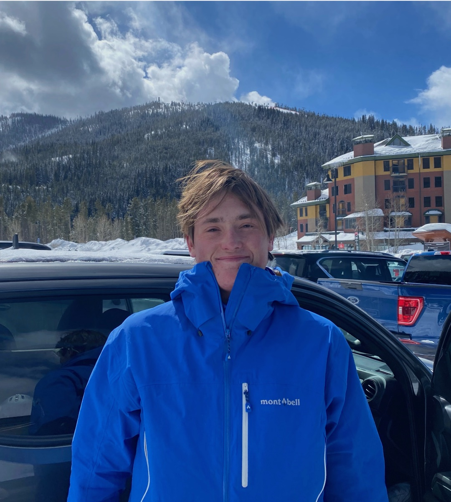

Tatum “Tate” Middleton
B.S. Physics, Computer Science minor
University of Colorado Boulder
I'm an undergraduate researcher in the Xun Gao group at JILA, where I work at the intersection of quantum information and machine learning, and an Applied Physics Intern at SRI International. Previously, I worked on neutral-atom quantum computing hardware in the Adam Kaufman group at JILA.
Research interests: quantum information, quantum and classical machine learning, diffusion models, physics of AI, and AMO physics.
Research Experience
JILA, Xun Gao Group · University of Colorado
09/2024 – Present- Honors thesis: analyzing the semantic geometry of datasets through diffusion-model dynamics, using conditional mutual information phase transitions along denoising paths, continuing arXiv:2605.04830.
- Adapting classical MRF MAP inference into quantum adiabatic algorithms targeting quantum advantage on neutral-atom hardware; built an experimental topological Hopfield network model for Bose–Hubbard quantum computers.
- Simulating neutral-atom lattice dynamics with tensor-network methods (DMRG, TDVP via TeNPy).
- Explored stochastic path-integral (Martin–Siggia–Rose) methods to characterize the limits of computational advantage for ML on quantum and thermodynamic sampling platforms.
- Built early ML models for novel diffusion-model methods, precursor work to arXiv:2508.06614.
SRI International · Boulder, CO
05/2026 – Present- Designed an optics experiment to test and verify attacks against BB84 quantum key distribution systems, validating attack models with the theory team using single-photon counters and FPGA tracking.
- Designed, simulated (Tidy3D), and tested photonic integrated circuits, including ring resonators and optical phased arrays.
- Built a 64-channel photonic hardware control system (PySide6/Qt) communicating with a Zynq FPGA for real-time control.
JILA, Adam Kaufman Group · University of Colorado
05/2024 – 08/2025- Simulated and built a Fabry–Pérot optical cavity tuned to an integer-wavelength length for atomic control.
- Wrote a numerical simulation of Gaussian beam propagation through complex optics using ABCD matrices, accurate to 0.001 mm.
- Built a closed-loop PID system (Python, Raspberry Pi) correcting laser positional drift with 97% accuracy and millisecond correction times.
Laboratory for Atmospheric and Space Physics · University of Colorado
08/2022 – 05/2023- Built a MATLAB image-processing pipeline that directly observed high-altitude gravity waves for the first time in NASA satellite imagery; co-authored the resulting paper.
Publications & Preprints
- Observing Gravity Waves in the Thermosphere through Solar Occultations, with E. Thiemann. 2025, under review.
- Quantum MRF MAP Inference on Extended Bose–Hubbard Machines. 2026, in preparation.
- Semantic Geometry of Datasets via Speciation Times. In preparation (honors thesis).
Talks
- “Inference on Bose–Hubbard Machines via MRF MAP.” CU Boulder Undergraduate Research Expo, Spring 2026.
- “Clifford Hierarchy” (group presentation, Quantum Error Correction Part 2). Gene Golub SIAM Summer School, Duke University, July 2026.
- “Computer Vision and Image Restoration on Bose–Hubbard Machines.” Colorado Undergraduate Physics Conference, Quantum Information Theory section, Fall 2025.
- Technical lecture series (Python, ML fundamentals, local LLMs). CU Boulder AI Club, Fall 2025.
Projects
The Clifford Hierarchy: A Survey for Quantum Error Correction
July 2026A literature review and presentation on the Clifford hierarchy and its role in fault-tolerant quantum computation, forming Part 2 of a two-part QEC project alongside a review of qLDPC codes and surface-code decoding. Covers gate teleportation, semi-Clifford and generalized semi-Clifford gates, diagonal gates and climbing the hierarchy with CSS codes, permutation gates in the third level, and logical Clifford synthesis, with open problems connecting hierarchy structure to transversal logical gates.
Quantum Perceptron
A single-node quantum neural network in Qiskit that classifies MNIST digits with 85% accuracy.
M24 Quantum Cryptography Encoding Scheme
A quantum cryptography scheme based on quantum random walks for eavesdropping protection (PHYS 2170).
Gaussian Beam Propagation Simulator
ABCD-matrix simulation of Gaussian beams through multi-element optical systems, built for the Kaufman lab.
Powerwash
A full-stack web app for automatic data cleaning, including normalization and classification.
Education
University of Colorado Boulder
08/2023 – 12/2026Graduate coursework: Quantum Information and Computing, Probability Theory.
Selected coursework: Quantum Mechanics 2, Thermodynamics & Statistical Mechanics, Electricity & Magnetism 2, Classical Mechanics & Mathematical Methods 2, Experimental Physics, Linear Algebra, Algorithms, Data Structures.
Gene Golub SIAM Summer School, Duke University
July 2026Graduate/postdoctoral summer school, accepted with full financial support. Topics included Hamiltonian learning and simulation, quantum error correction, and quantum hardware.
Summer School on Formal Techniques, SRI International
May 2026Formal methods with Yices and PVS, including applications to quantum compilers.
Honors & Awards
- SPIE Fellow, Monroe Fellow, and Jennifer Turner-Valle Fellow, Quantum Scholars Cohort (2024–2027)
- Google Fellow, Corporate Computing Affiliates Program (2024–2025)
- Bowman Physics Scholarship (2026–2027)
- Hale Esteemed Scholarship (2023–2027)
- CU Boulder Quantum Hackathon, 3rd place (2023–2024)
Skills
- Theory
- Quantum information, linear algebra, probability, optimization, numerical methods, statistical mechanics
- Experimental
- AMO physics, optics & laser physics, photonic integrated circuits, FPGAs
- Languages
- Python, C++, MATLAB, SQL, JavaScript, SystemVerilog
- Libraries
- PyTorch, TensorFlow, Qiskit, PennyLane, TeNPy, Tidy3D, OpenCV
Service & Leadership
- AI Club at CU Boulder, VP of Technology: built the club's first technical curriculum and research cohort on LLM hallucination. (2025–Present)
- PISEC: science instruction and STEM mentoring in Boulder Valley high schools. (2025–Present)
- Quantum Scholars, Alice & Bob Mentorship Program: mentor. (2025–Present)
- Tutoring: physics, computer science, math, MCAT topics, and Spanish for high school students and peers. (2024–Present)
- Triangle Engineering & Science Fraternity, Co-Founder. (2023–2024)